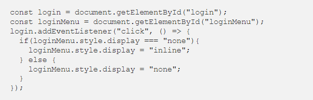
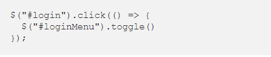
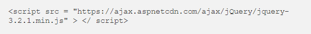
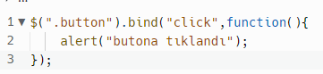
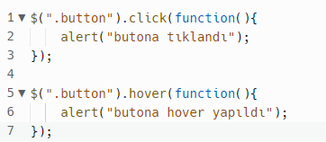
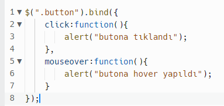
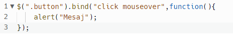

jQuery JavaScript kütüphanelerinden biridir. Ayrı bir dil değildir, JavaScript ile beraber çalışır. JavaScript kullanımını kolaylaştırmak ve sadeleştirmek amacıyla 2006 yılında John Resig tarafından geliştirilmiştir. jQuery sayesinde uzun satırlı kodları tek bir satıra indirebilirsiniz. jQuery’nin sloganı “az kod, çok iş” tir. Bu sayede sadece birkaç kod ile animasyonlar, slider efektleri ve gizleme - gösterme efektleri yapılabilir.
jQuery bir JavaScript kütüphanesinden başka bir şey olmadığı için, JavaScript’in yerini alamaz. Tüm jQuery kodları JavaScript’tir, ancak jQuery tüm JavaScript kodlarını içermez.
Diyelim ki class’ı “ornek-li” olan tüm öğeleri seçmek istiyorum. Bu işlem için eğer javaScript kullanırsak;
bunun yerine jQuery kullanırsak;

Bu sayede daha kısa kod yazmış olduk fakat daha gözle görülebilir bir örnek daha vermek istiyorum.
Oturum açma formunda açılıp kapanan bir HTML tuşunu javaScript ile yazmak istersek;
Bunun yerine jQuery kullanırsak;
Bu şekilde dokuz satır kod yazmak gerekirken jQuery’de bunu üç satırla gerçekleştirebiliyoruz.
Sayfanızın kodlarında eğer bu şekilde jQuery kullanmak istiyorsak, sayfanızın başlığına aşağıdaki gibi bir satır kod eklemeniz gerekir:
Herhangi bir nesneyi etkinleştirdiğimiz zaman gerçekleşen oluşuma olay diyoruz.
Örnek:
Sayfa içerisindeki bir elemanın click fonksiyonunda yapacağı işlemleri şu şekilde tanımlıyoruz:
Aynı fonksiyonu bind ile kullandığımızda da şu şekilde bir yapı oluşturuyoruz:
Çalışma mantığı olarak gördüğünüz gibi en basit kullanım şeklinde bir farklılık yok. Farklılık olan alanları da görmek için bir elemanın birden fazla özelliğini kontrol edelim. Örneğin bir butonun “click” ve “hover” fonksiyonlarında işlem yapmasını istiyorsak şu şekilde bir kullanım yapıyoruz:
Aynı eleman için birden fazla özelliği kontrol ederken ayrı ayrı fonksiyonlar oluşturduk. Bir çok elemanın click, hover, focus gibi özelliklerinin kontrol edeceğini düşündüğümüzde bu şekilde bir kullanım hem karışıklığa hem de kod tekrarına yol açacaktır. Aynı fonksiyonları bind ile kullandığımızda tek bir fonksiyon tanımlayarak içerisinde hem click hem de hover özelliğini kontrol edebiliriz. Kullanımı:
Gördüğünüz gibi “.button” class’ına sahip olan alan için tek bir kod bloğu içerisinde hem click hem de hover özelliğini kontrol ettik. Ayrıca her iki özellik sonucunda da aynı sonuç tetiklenecek ise üstte yazdığımız fonksiyonu daha da kısaltabiliriz. Kullanımı:
Kısa ve özet şekilde jQuery anlatımım bu şekilde. Eğer alıştırma yapıp bilgilerinizi tazelemek isterseniz de alta link bırakıyorum. İyi çalışmalar :)
Minik bir alıştırma